地政学
ミュンヘンはバイエルン州都として南ドイツを束ね、連邦制の中で州政府、産業政策、欧州交通、アルプス観光を接続する。首都ベルリンとは違う地域権力の重さが、ドイツの多極性を示す都市である。安全保障会議も集まる。

🇩🇪 ドイツ / ヨーロッパ / World City Atlas
バイエルン州都、工業と研究、ビール庭園、移民労働、記憶政治、住宅難、アルプスへの近さが重なる南ドイツの重要都市。
都市の骨格
ミュンヘンは首都ベルリンとは異なる重心を持つ。州政府、輸出産業、大学、文化観光、アルプスへの玄関が重なり、豊かな都市の生活費と労働の不均衡も見える。
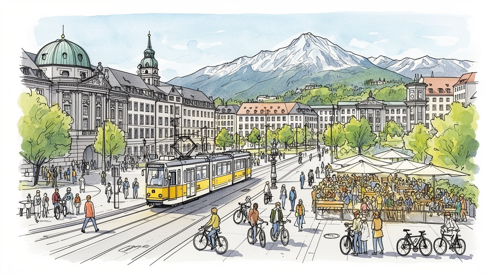
ミュンヘンはバイエルン州都として南ドイツを束ね、連邦制の中で州政府、産業政策、欧州交通、アルプス観光を接続する。首都ベルリンとは違う地域権力の重さが、ドイツの多極性を示す都市である。安全保障会議も集まる。
自動車、保険、電機、ソフトウェア、大学研究、観光、見本市が雇用を生む。高賃金専門職の都市である一方、介護、清掃、飲食、建設、移民労働も生活を支える基盤として欠かせない。職業訓練の厚みも地域に強く残る。
カトリックの祭礼、ビール庭園、オペラ、博物館、移民宗教、サッカーが日常に混ざる。伝統衣装や祝祭は観光演出だけでなく、地域帰属を確認する公共の場にもなっている。教会暦も今の暮らしを静かに区切っている。
旧市街と公園は歩きやすく、アルプスへの近さも魅力だが、住宅費は高く、学生や若い家族には重い。観光の明るさと家賃の圧力が同じ街路で交差する都市でもある。住み続ける条件が観光の印象を大きく左右している。
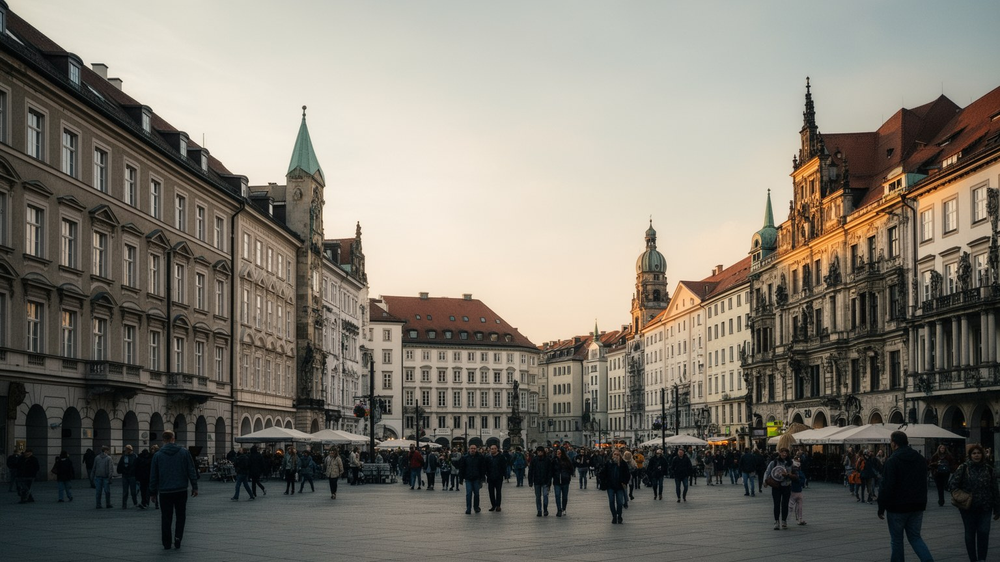
ミュンヘンはドイツの首都ではないが、バイエルン州の政治、行政、経済、文化を強く束ねる州都である。州政府、議会、裁判所、大学、企業団体、教会組織、メディアが近接し、連邦制の中でベルリンとは違う権力の中心を作る。南ドイツの保守的な政治文化、カトリックの記憶、農村と工業の結びつき、豊かな財政は、街の公共投資や教育政策にも反映される。ミュンヘンの広場や庁舎は観光地であると同時に、州政治の判断が日々現れる場所でもある。難民受け入れ、住宅供給、交通拡張、気候政策、警備、学校制度をめぐる議論は、連邦政府だけでなく州都の制度を通して住民に届く。オーストリア、イタリア北部、チェコへ向かう地理も、欧州内の地域連携を意識させる。州都としてのミュンヘンは、ドイツが一極集中の国ではないことを示す。政治の重さは威厳ある建物だけでなく、役所の窓口、州立博物館、大学病院、警察、道路工事、通学制度にも分かれている。豊かな州都であることは誇りを生む一方、地方との格差や都市への集中も招く。ミュンヘンを読むには、首都ではない都市がどのように国の方向を左右するのかを見る必要がある。国際安全保障会議の季節には外交官、軍関係者、抗議する市民が集まり、世界政治の緊張も一時的に街路へ現れる。地域の州都でありながら、欧州全体の議論を受け止める舞台にもなる。
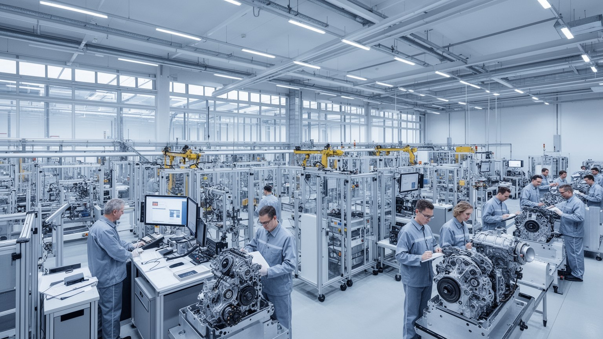
ミュンヘンの経済を語る時、自動車産業は避けられない。完成車メーカー、部品企業、設計、ソフトウェア、電動化、保険、金融、広告、展示会、法律事務所が結び、都市圏の高賃金雇用を作っている。自動車は工場だけの産業ではなく、大学研究、デザイン、データ、物流、販売、整備、充電インフラまで広がる都市システムである。電動化と自動運転、欧州の排出規制、中国市場への依存、サプライチェーンの再編は、ミュンヘンの専門職にも工場労働にも影響する。高収入の技術者や管理職は住宅市場を押し上げ、中心部の飲食や小売を支えるが、同じ都市で清掃、警備、配送、介護を担う人の賃金は追いつきにくい。産業の成功は、職業訓練、移民労働、研究資金、公共交通、手頃な住まいがそろって初めて維持される。自動車都市としての誇りは、環境負荷や道路空間の使い方をめぐる批判とも並んでいる。ミュンヘンが次の時代も強い産業都市であり続けるには、車を売るだけでなく、移動、エネルギー、都市生活の設計を変えなければならない。経済の厚みはエンジン音より、研究室、職業学校、工場、駅、家庭の時間のつながりに現れている。下請け企業や整備工場、部品倉庫、職業学校の訓練生まで視野に入れると、産業都市の裾野は都心の本社ビルより広い。技術転換の痛みを誰が引き受けるのかも、都市の重要な問いになる。
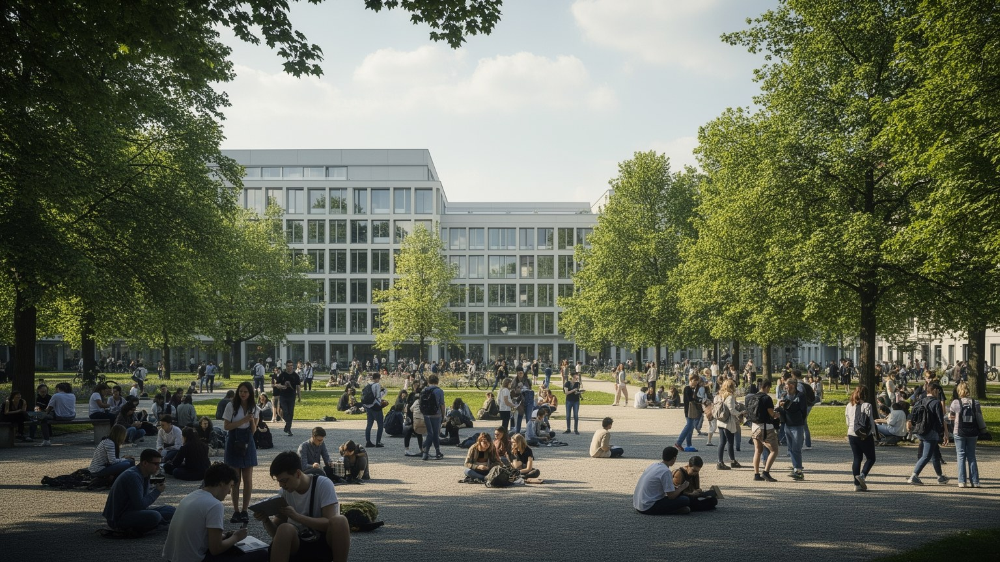
ミュンヘンは大学と研究機関の都市でもある。ルートヴィヒ・マクシミリアン大学、ミュンヘン工科大学、マックス・プランク系研究所、病院、スタートアップ支援施設が集まり、物理、医学、情報科学、気候、宇宙、ロボット、生命科学の人材を育てる。学生と研究者は国際色が強く、英語で働く研究室も多いが、住まい探し、ビザ、保育、ドイツ語、学費や生活費の問題は簡単ではない。研究都市の魅力は、講義室や実験室だけでなく、企業との共同研究、特許、インターン、図書館、カフェ、学生自治、デモ、夜のアルバイトに広がる。高度な知識労働は都市のGDPを押し上げる一方、成果主義、短期契約、博士課程の不安定さも生む。大学があることで街は若く保たれるが、家賃が上がれば学生は遠くから通い、研究の時間を削られる。科学都市としてのミュンヘンを読むには、ノーベル賞や企業買収だけでなく、寮、研究費、図書館の席、研究補助員、留学生相談の窓口を見る必要がある。知識は建物の中で生まれるが、生活費と制度に支えられなければ都市には残らない。産業と大学の近さは強みであると同時に、公共的な学問を市場の都合だけに寄せすぎないための緊張も含んでいる。留学生が卒業後も地域で働ける制度、研究者の家族が暮らせる住宅、実験を支える技術職の待遇は、研究都市の競争力を静かに左右する。知の集積は、生活の足場なしには維持できない。
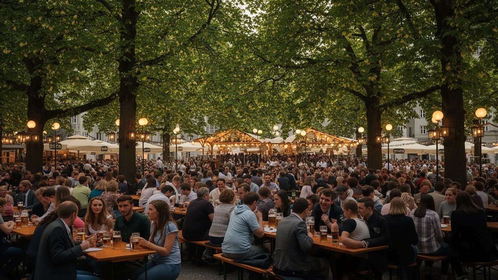
ミュンヘンのビール文化は、観光客向けの陽気な記号だけではない。ビール庭園、醸造所、食堂、祭礼、音楽、伝統衣装、家族の集まりは、地域社会が季節を共有する仕組みとして機能してきた。屋外で長机を囲み、持ち込みの食事と飲み物を分ける習慣は、都市の緑地や公共性とも結びつく。オクトーバーフェストは世界的な観光イベントで、ホテル、交通、警備、清掃、飲食、仮設労働に大きな需要を生むが、同時に混雑、飲酒、価格上昇、住民の負担も引き起こす。ビールの伝統はカトリックの暦、職人文化、農村との結びつき、男性中心の社交と関係してきたが、現代のミュンヘンでは女性、移民、若者、観光客、菜食文化も同じ食卓を変えている。伝統が生きている都市では、保存と更新が常に交渉される。祭りを楽しむ人の背後には、早朝から働く設営作業員、調理人、配膳係、警備員、清掃員がいる。ビール庭園を読むことは、消費文化ではなく、都市がどのように時間、食、気候、近隣関係を共有するかを見ることでもある。名物の明るさに目を奪われすぎると、労働条件や公共空間の使い方を見落とす。乾杯の場は、地域の誇りと都市運営の細部が同じ机に載る場所である。価格が上がれば地元の若者は参加しにくくなり、観光向けの演出が強くなれば日常の社交は細る。伝統を守るとは、雰囲気だけでなく、住民が普段使いできる余地を残すことでもある。
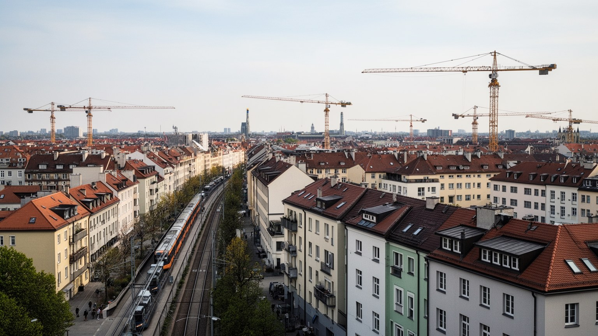
ミュンヘンの暮らしで最も鋭い課題は住宅である。高い賃金、企業の集積、大学の人気、治安の良さ、緑地、アルプスへの近さは都市の魅力を高めるが、その魅力は家賃と住宅価格を押し上げる。中心部の古い集合住宅は改修され、郊外には新しい住宅地が広がるが、学生、若い家族、移民労働者、単身高齢者にとって手頃な部屋は不足しがちである。住まいを探す時間、保証人、敷金、通勤距離、保育園の場所は、仕事や学業の選択を左右する。豊かな都市ほど、清掃、介護、飲食、公共交通、病院で働く人が市内に住めない矛盾が目立つ。住宅問題は個人の節約では解けず、土地利用、公共住宅、賃貸規制、郊外鉄道、再開発、相続、観光需要が絡む都市政治である。きれいな旧市街や落ち着いた住宅地は、誰かを排除した結果になり得る。ミュンヘンを公平な都市として保つには、成長の利益を住宅供給と生活インフラへ戻す必要がある。家賃が上がり続ければ、大学の多様性も、公共サービスの働き手も、地区の小商店も弱くなる。都市の豊かさは、高級な住環境ではなく、普通の仕事をする人が近くで暮らせるかによって試される。住まいは景観ではなく、都市に参加する権利の土台である。保育園、学校、診療所、スーパーが近いかどうかも住宅の価値を決める。遠い郊外へ押し出されれば、家賃は少し下がっても時間と体力の負担が増え、都市の便利さは通勤疲れへ置き換わる。
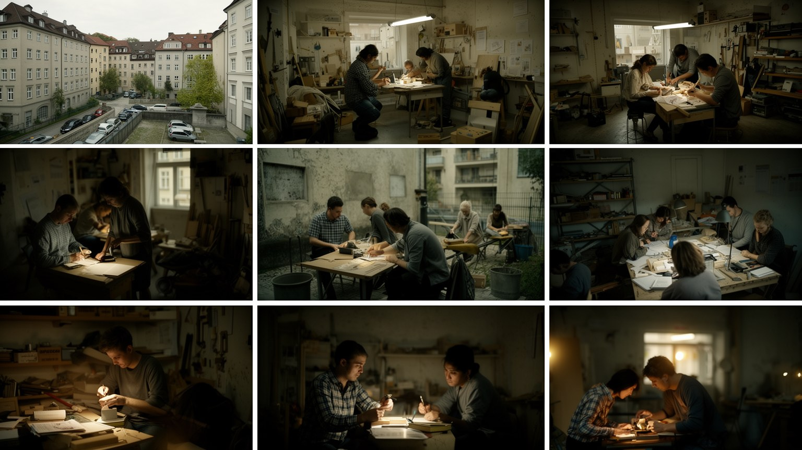
ミュンヘンは豊かな南ドイツの都市であると同時に、移民の都市でもある。トルコ、旧ユーゴスラビア、イタリア、ギリシャ、東欧、中東、アジア、近年の難民や留学生が、工場、建設、清掃、介護、飲食、ホテル、配送、医療、IT、大学で働き、街の生活を支えている。中央駅周辺や住宅地区には多言語の商店、礼拝所、送金窓口、食堂、美容室、学習支援があり、都市の国際性は観光名所とは違う場所で見える。ドイツ語、資格認定、在留手続き、差別、学校での言語支援、住宅探しは、移民世帯の日常を左右する。高技能移民は企業の競争力を支え、サービス労働者は都市の快適さを支えるが、どちらも制度の壁に直面することがある。移民文化は食や祭りとして歓迎されやすい一方、労働条件や住まいの不安は見えにくい。ミュンヘンの豊かさを読むには、企業本社だけでなく、早朝の清掃、病院の夜勤、厨房、建設現場、保育園、語学学校を見なければならない。多様性は標語ではなく、役所、学校、職場、近所の会話で毎日試される。移民が安心して家族を作り、技能を認められ、政治に参加できるかは、都市の将来そのものに関わる。包摂の実務が弱ければ、豊かな都市でも孤立は深まる。第二世代の若者が学校から職業訓練、大学、起業へ進めるかどうかは、都市の開かれ方を測る指標になる。移民を労働力としてだけ扱わず、市民として迎える制度が必要である。
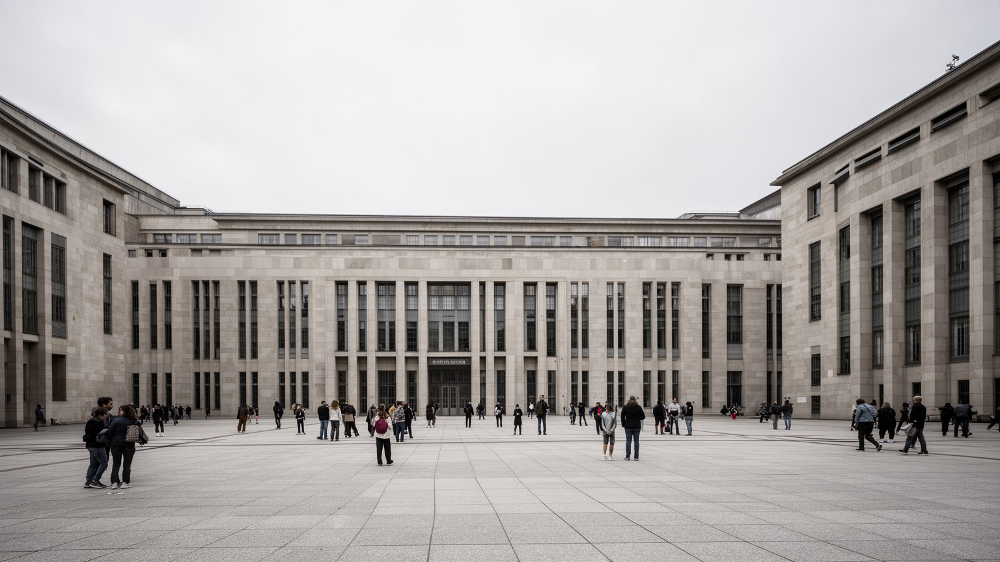
ミュンヘンは文化と豊かさの都市であるだけでなく、二十世紀の政治的記憶を背負う都市でもある。ナチ党の初期拠点であった歴史、戦争、迫害、破壊、戦後復興、記念施設、通りの名前、博物館展示は、明るい旧市街の背後に重い層を作る。観光客が広場やビアホールを歩く時、その同じ場所が政治的動員、暴力、抵抗、沈黙の舞台であったことを忘れやすい。記憶政治は過去を暗記することではなく、誰の犠牲をどう示し、どの建物を残し、どの言葉を使い、学校で何を教えるかという現在の選択である。ミュンヘンでは、繁栄と記憶を切り離さずに見る必要がある。企業、大学、行政、教会、市民団体は、過去への責任を公共空間の中で扱ってきたが、極右的言説や移民排斥が現れる時、その作業は終わっていないことが分かる。記念碑は静かな石に見えても、社会が何を忘れないかをめぐる緊張を含む。都市の成熟は、過去の恥を隠すことではなく、日常の通学路や観光動線の中で考え続けられる形にすることにある。ミュンヘンを読むことは、華やかな文化都市がどのように暗い記憶を公共の責任へ変えるかを見ることでもある。記憶を扱う作法が、現在の市民の信頼を支えている。追悼の場が市民教育や移民の経験と結びつく時、過去は遠い歴史ではなく、差別を防ぐ現在の制度になる。沈黙の場所をどう語るかが、都市の倫理を形づくる。
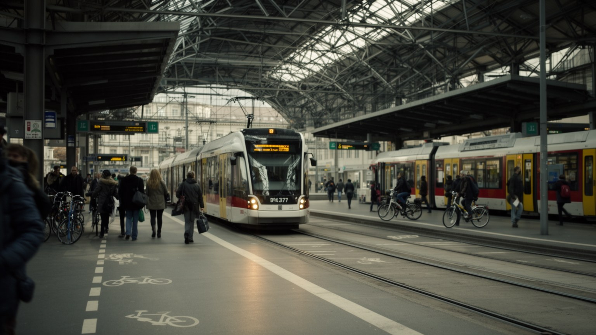
ミュンヘンの都市圏は、Uバーン、Sバーン、トラム、バス、中央駅、空港、高速道路によって広く結ばれている。旧市街は徒歩で回りやすく、地下鉄と近郊鉄道は通勤、通学、観光を支えるが、住宅価格の上昇によって人びとの住む場所は郊外へ広がり、移動時間の負担も増える。中央駅はドイツ国内だけでなく、オーストリア、イタリア、スイス方面へ向かう欧州交通の結節点であり、空港は国際ビジネスと観光を結ぶ玄関である。交通網は豊かな都市の強さだが、混雑、遅延、工事、運賃、バリアフリー、自転車と自動車の道路配分をめぐる不満もある。気候政策が進むほど、車中心の生活から公共交通と自転車、歩行へ移る必要が高まる。だが公共交通の拡張には時間と資金がかかり、郊外自治体との調整も必要になる。交通を読むことは、都市の自由を読むことである。早朝に病院へ向かう看護師、夜に帰る飲食店員、大学へ通う学生、空港へ急ぐ出張者、週末に山へ行く家族は、同じ路線を違う目的で使う。駅は移動の施設であると同時に、商業、出会い、治安、社会支援の場でもある。ミュンヘンの成長が持続するかは、雇用と住まいを安く確実な移動で結べるかにかかっている。長年議論される鉄道容量の拡大は、単なる工事計画ではなく、郊外に住む人の時間を取り戻す政策である。遅延や乗り換えの不便は、都市の豊かさを毎日の疲労へ変えてしまう。
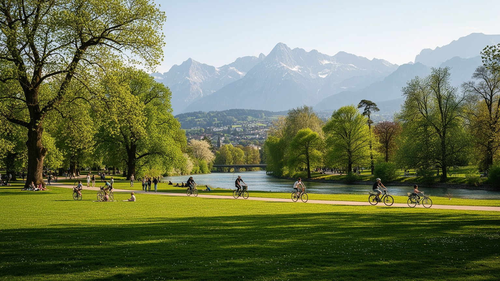
ミュンヘンの魅力は、旧市街の歴史だけでなく、イザール川、英国庭園、湖、近郊の森、アルプスへの近さにある。都市の中心から短い時間で川辺に出られ、週末には列車や車で山へ向かえることは、生活の質を大きく高める。緑地は散歩やスポーツの場所であるだけでなく、夏の暑さを和らげ、洪水を受け止め、子どもや高齢者が無料で過ごせる公共空間でもある。豊かな都市では余暇が消費商品になりやすいが、公園や川辺は所得に関係なく使える場所として重要である。一方で、人気の緑地は混雑、ごみ、騒音、自然保護、観光客と住民の使い方の違いをめぐる対立も生む。アルプスの近さは都市のブランドを高めるが、気候変動で雪、森林、水資源、交通渋滞の条件も変わっている。ミュンヘンの公園を読むには、美しい風景だけでなく、誰が近くに住み、誰が安全にアクセスでき、誰が管理し、誰が清掃するのかを見る必要がある。緑地は都市の贅沢ではなく、健康、気候適応、社会的な混ざり合いを支える基盤である。川辺で休む時間、木陰を歩く通学路、山から戻る列車の混雑は、都市と自然が切り離せないことを示す。豊かさは建物の内側だけでなく、無料で息をつける場所の広さにも表れる。水辺の再生や街路樹の保全は、観光景観を整えるためだけではなく、熱波に備える都市福祉でもある。自然への近さを守るには、利用者の多さと生態系への配慮を同時に考えなければならない。
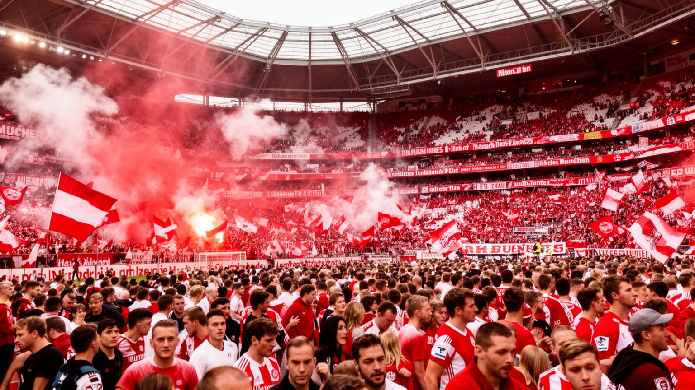
ミュンヘンのサッカー文化は、世界的なクラブの成功と地域の日常が重なる場所にある。バイエルン・ミュンヘンは巨大なブランド、スポンサー、放映権、国際観光、スター選手を引き寄せ、試合日は地下鉄、バー、家庭、職場の会話を変える。スタジアムは観戦施設であるだけでなく、警備、清掃、飲食、交通、グッズ販売、メディア制作を動かす経済装置でもある。強いクラブは都市の誇りを高めるが、商業化が進むほど地元サポーターの席、価格、応援文化、クラブの公共性をめぐる議論も強まる。サッカーは男性的な熱狂として語られがちだが、女性、子ども、移民、観光客、地域の小クラブも都市の感情を作っている。勝利の祝賀は広場やビール店に流れ、敗北は新聞、ラジオ、職場の冗談に残る。世界的クラブを持つ都市では、スポーツが都市ブランドと不動産、観光、交通政策にまで影響する。ミュンヘンのサッカーを読むには、ピッチ上の強さだけでなく、試合後の地下鉄、近隣の混雑、清掃員、警備員、ユースチーム、移民のファン文化を見る必要がある。クラブは九十分の娯楽ではなく、都市が誇り、階層、帰属、商業化をどう扱うかを映す鏡である。応援の声は地域の連帯を作る一方、誰がその場に入れるのかという問いも残す。下部組織や地域クラブの練習場には、スターとは違う都市のスポーツ生活がある。子どもが放課後にボールを追う場所も、都市の公共性を測る小さな指標になる。
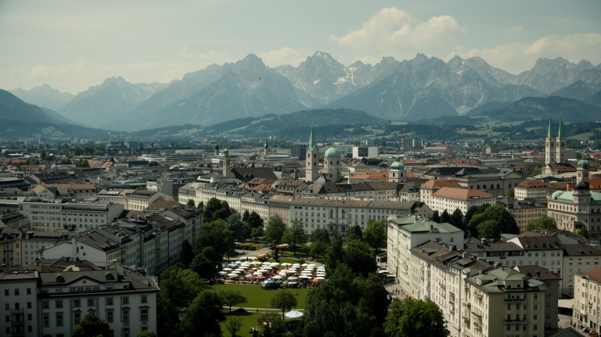
ミュンヘンを読むことは、豊かな南ドイツの美しい都市という印象を、政治、産業、労働、記憶、住宅、移民、自然環境と重ねることである。旧市街の塔、ビール庭園、博物館、アルプスへの近さは確かに大きな魅力だが、その背後には自動車産業の転換、大学研究の競争、家賃の高さ、移民労働、記憶政治、交通拡張、気候適応がある。ミュンヘンの強さは、州都としての制度、企業本社、大学、公共交通、文化的な誇りが互いに支え合う点にある。一方で、その成功は生活費を上げ、中心部から普通の労働者や学生を遠ざける危険も持つ。世界都市としての重要性は、金融額だけでは測れない。ここでは、連邦制の地域権力、製造業の未来、公共空間としての食文化、過去への責任、緑地と山の生活価値が一つの都市圏で結びついている。旅行者には整った旧市街と祝祭の都市に見えても、住民には家探し、通勤、保育、賃金、言語、暑さ、混雑が毎日続く。ミュンヘンの成熟は、豊かさを守ることではなく、その豊かさに誰が参加できるかを広げることにかかっている。街を立体的に見るほど、明るい景観の中にある制度と労働の層が見えてくる。豊かな都市ほど、公平さへの責任も大きい。だからミュンヘンの価値は、きれいに保存された中心部だけでなく、郊外の駅、学生寮、工場、移民の商店、川辺の公共空間にも現れる。複数の層を同時に読む時、この州都は欧州都市の未来を考える手がかりになる。